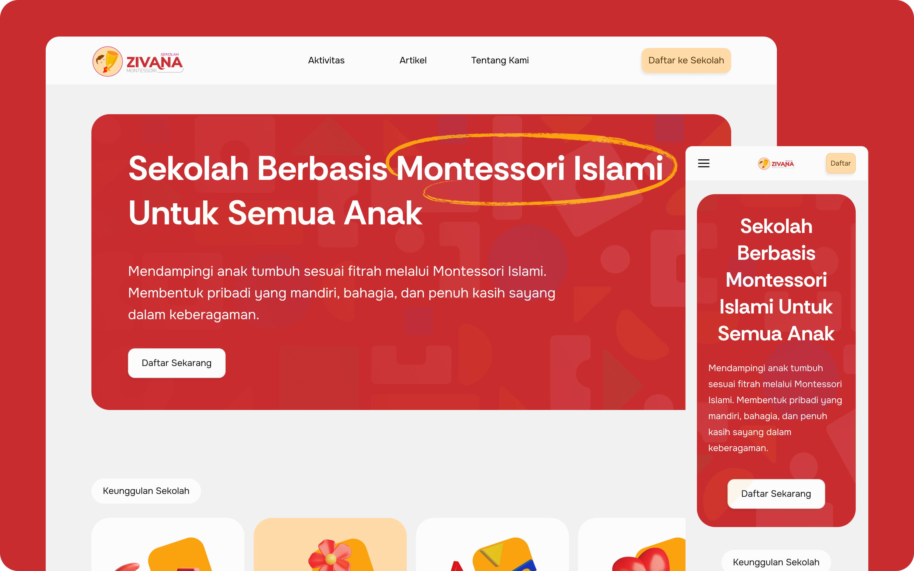
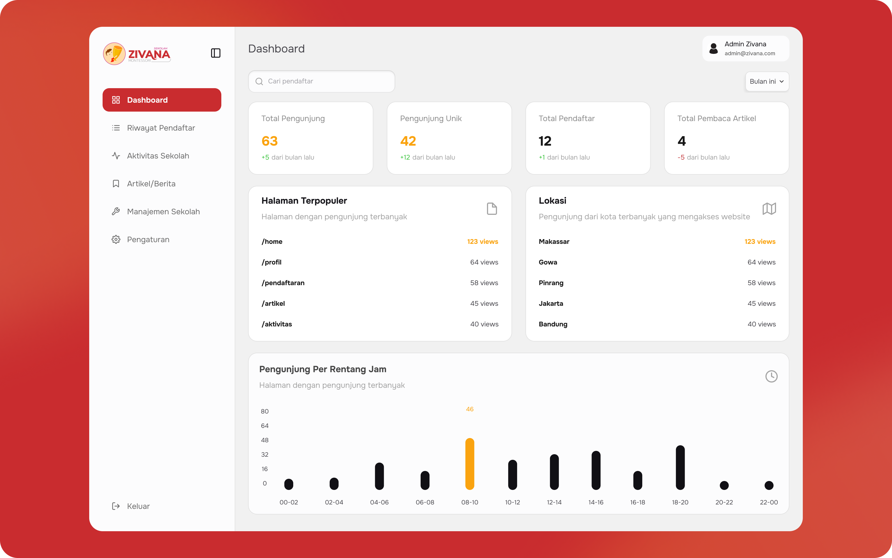
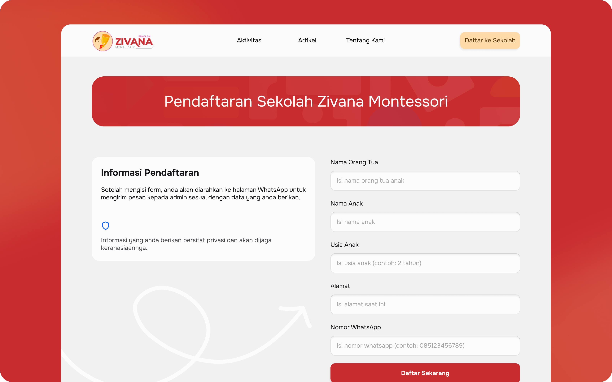

Kindergarten Landing Page Turning Social Media Branding Into Real Enrollments

Client
TK ZIVANA is a Montessori kindergarten in Makassar with strong branding already established on social media.
Problem
Zivana had strong social media presence, but no landing page to serve as a credibility anchor for prospective parents deciding whether to enroll their children.
Process
I initiated a landing page designed not just to build credibility, but to reinforce the school's branding and attract new registrations. The school was initially skeptical that a website could bring in any registrations at all, but once I made the case, we agreed the page should center on the school's appeal, its credibility, and a clear enrollment path for parents.
Outcome
From Skepticism to Real Enrollments
Delivered a colorful, fun, and quirky landing page that still felt every bit Montessori, giving the school a way to publish articles, staff profiles, and programs, alongside a clear enrollment path for parents. The site now draws over 2,000 unique visitors a year and brought in 11 new student registrations between January and September this year alone. It's still being actively developed, with SEO and admin features next in line.

